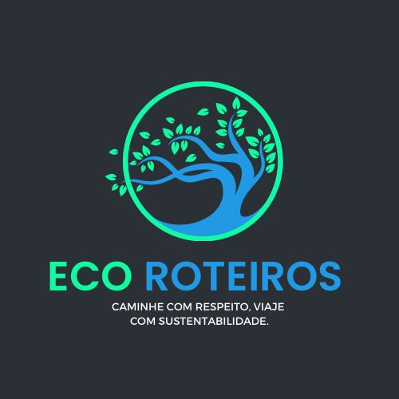

Nossa equipe, formada por alunos do terceiro ano do ensino médio do Colégio Sesi Loanda, está entusiasmada em unir forças para criar um impacto positivo. Com o intuito de promover a consciência ambiental e realçar as maravilhas naturais, o Instagram que idealizamos será um espaço para compartilhar informações sobre os pontos turísticos ecológicos e sustentáveis no Noroeste do Paraná. Além disso, planejamos disponibilizar dados e curiosidades sobre a preservação da biodiversidade local, os esforços de conservação e os desafios enfrentados pela região em relação ao meio ambiente.
Cada postagem será mais do que apenas uma foto cativante; será uma janela para sensibilizar as pessoas sobre a importância da preservação ambiental e da sustentabilidade. Vamos não só destacar as belezas naturais da região, mas também compartilhar dicas práticas para visitas responsáveis, promovendo a valorização e a proteção desses tesouros naturais para as gerações futuras. Este espaço digital se tornará um ponto de encontro para aqueles que desejam descobrir, apreciar e ajudar a preservar as paisagens, rios, trilhas e reservas naturais do Noroeste do Paraná.
Ecoturismo é uma forma de turismo que busca explorar e preservar ambientes naturais, promovendo a conservação, conscientização e minimizando o impacto ambiental. Sua importância reside em promover a sustentabilidade, conservação da natureza e conscientização ambiental. Os benefícios incluem a preservação de ecossistemas, geração de empregos locais, valorização cultural e incentivo à conservação da biodiversidade.
Confira os incríveis lugares por onde você vai passar.
Descrição do Taquara Oq tem lá Localização
O encontro dos rios Paraná e Paranapanema ocorre na região sul do Brasil, próximo à divisa entre os estados de São Paulo e Paraná. Esse ponto de confluência é conhecido como Porto São José. O Rio Paraná é um dos mais extensos da América do Sul, e o Paranapanema é um de seus afluentes importantes. A junção desses rios forma um cenário natural impressionante, destacando-se pela beleza paisagística e pela importância ambiental para a região.
Ilha do Guadalupe, também conhecida por Ilha dos Pneus, próximo ao Porto Maringá. A pequena ilha se destaca pela natureza exuberante, pela linda praia e aconchego, atraindo os casais apaixonados de toda a região.
O Parque Municipal dos Três Morrinhos está situado no município de Terra Rica e conta com uma paisagem única na região. Este sítio geológico constitui um grupamento de elevações alongadas, compostas de arenitos silicificados, formando morros testemunhos, que se destacam na paisagem regional.
falar de outro lugar
Duração de 2 dias, com destino a um lugar de sua escolha, com atividades de lazer reduzidas, (incluindo somente o básico da programação local). Acomodação em hotel econômico, tendo café da manhã como refeição do hotel.
Duração de 4 dias, com destino a 3 lugares de sua escolha, com atividades de lazer, (incluindo a programação local + nosso roteiro extra). Acomodação em hotel 4 estrelas, tendo café da manhã, almoço e café da tarde como refeições do hotel.
Duração de 7 dias, com destino a 5 lugares de sua escolha, com atividades de lazer, incluindo tudo de melhor que os devidos locais tem a oferecer (Programação local + nosso roteiro extra). Acomodação em hotel 5 , tendo todas as refeições incluídas.
Confira aqui relatos de pessoas que confiram no nosso trabalho.
"Ótimo suporte"
"A empresa consegue te colocar em uma situação de reflexão enquanto se diverte. Excelente"
"Assinei o plano Premium e adorei cada momento."